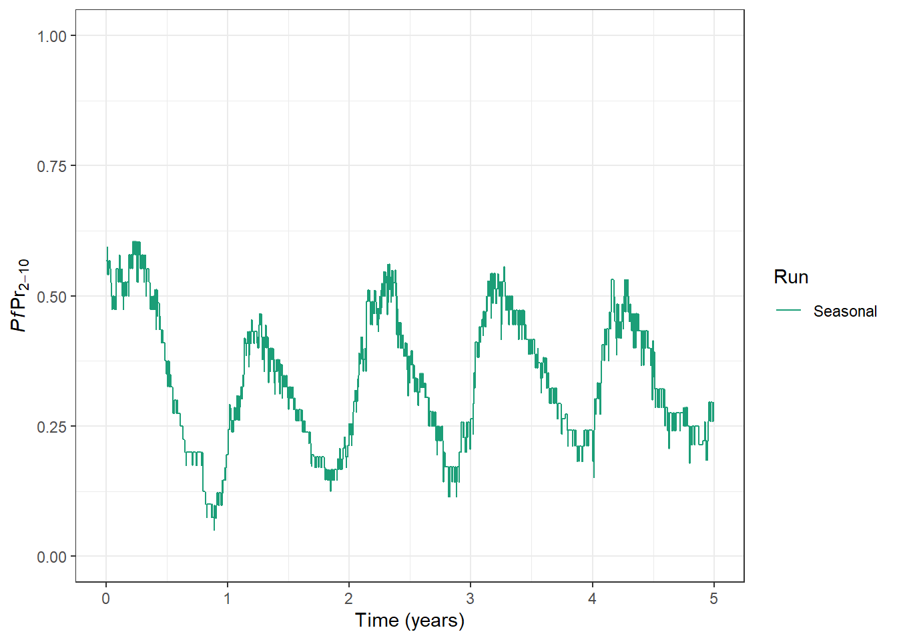
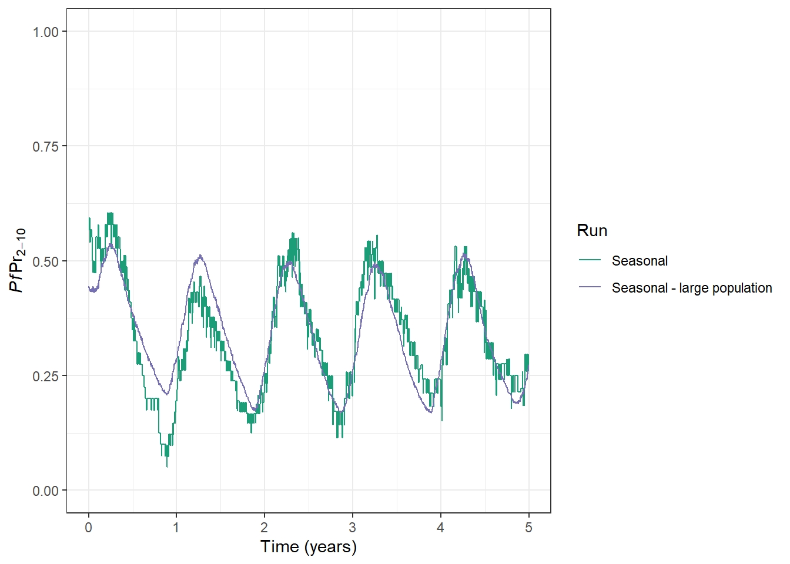

# Load packages
library("malariasimulation")
library("postie")
library("dplyr")
library("ggplot2")
palette <- c("#1B9E77", "#7570B3", "#E7298A", "#D95F02", "#66A61E")Malariaverse Tutorial: Part 2
In part 2 we will explore how to capture other important elements that influence malaria transmission besides the baseline transmission and interventions.
Let’s go!
What infleunces malaria transmission
Before we dive straight into malariasimulation code, it’s helpful for us to consider what other aspects of the environment, human population or mosquito population might be important to capture in our modelling.
🌧 The environment
The key way in which the environment impacts transmission in malariasimulation is via rainfall, which drives the availability of mosquito breeding site and there for the number of mosquitoes that can transmit malaria.
The human population
We can consider two aspects of the human population as important in different ways
1. The modelled population size: We rarely use actual population sizes when modelling malaria in a specific region or country as it would make the model run too slowly! Instead we aim to set the modelled population size high enough such that we minimise very influential stochastic behaviour (e.g. elimination of malaria by chance), whilst keeping model run-time reasonable. There is no single “correct” model population size and often some testing with different population sizes in the most helpful approach. Some elements you want to consider might be: * The level of transmission. At low transmission stochasticity might be more influential and you may therefore want to increase you modelled population size. * The research question. Do you want to capture the impact of stochastic effects with smaller modelled population sizes, or minimise them? * The study population. Remember, if your population of interest is a subset of the total population you may want to increase the modelled poplation size so that the trends in the target population are clear.
2. The population demography: We know that there are strong age-related patterns in malaria incidence, severe disease and death. Therefore it is important to accurately capture the age-structure of your target population. We want to ensure the modelled population has the right proportion of infants, children and adults.
🦟 The mosquito population:
The mosquito population is, not surprisingly, very impactful on modelled malaria transmission. We should not only think about how many mosquitoes, but also what species of mosquito. Different species may behave very differently, meaning that their ability to transmit malaria, or our ability to control them could also look very different from place to place.
Capturing these influences in malariasimulation
Modelling seasonality in rainfall
We can model a setting where malaria transmission is seasonal, varying throughout the year. The easiest way of doing this is by providing some “seasonality parameters”, these have been fitted to rainfall data to capture how rainfall varies across the year
parameters <- get_parameters()
# Set up for model seasonality
parameters$model_seasonality <- TRUE
# Define the seasonality parameters: g0, g and h
parameters$g0 <- 0
parameters$g <- c(1, 0, 0)
parameters$h <- c(0, 0, 0)
# Set the baseline EIR
parameters <- parameters |>
set_equilibrium(init_EIR = 10)
# Set a seed for reproducible stochastic outputs
set.seed(1234)
# Run a new simulation
output <- run_simulation(
timesteps = 365 * 5,
parameters = parameters
)
# Extract formatted prevalence from the raw output and add a run name
processed_output <- get_prevalence(
x = output,
baseline_year = 0
) |>
mutate(
run = "Seasonal",
run = factor(run, levels = c("Seasonal"))
)
prev_plot <- ggplot(
data = processed_output,
aes(x = time, y = lm_prevalence_2_10, colour = run)
) +
geom_line() +
scale_colour_manual(
values = palette, name = "Run"
) +
xlab("Time (years)") +
ylab(expression(italic(Pf) * Pr[2-10])) +
ylim(0, 1) +
theme_bw()
prev_plot
To find out more about how we estimate the seasonality parameters, have a look at the documentation for the umbrella R package.
We can also set up much more specific seasonal profiles that vary between years and mosquito species. For more information on this, check out the carrying capacity vignette.
Changing the human population size
We can change the modelled human population size with the human_population parameter. If we increase the human population to 5000, we can see the impact on our prevalence plot - there is much less stochastic noise in the outcome.
Note we need to re-set the init_EIR using the set_equilibrium() function after changing the human population, as the the human population infleucnes the equilibrium.
parameters$human_population <- 5000
parameters <- parameters |>
set_equilibrium(init_EIR = 10)
# Set a seed for reproducible stochastic outputs
set.seed(1234)
# Run a new simulation
output <- run_simulation(
timesteps = 365 * 5,
parameters = parameters
)
# Extract formatted prevalence from the raw output and add a run name
processed_output <- get_prevalence(
x = output,
baseline_year = 0
) |>
mutate(
run = "Seasonal - large population",
run = factor(run, levels = c("Seasonal", "Seasonal - large population"))
)
prev_plot <- prev_plot +
geom_line(data = processed_output, aes(x = time, y = lm_prevalence_2_10, col = run))
prev_plot
Changing demography
The default demography in malaria simulation assumes a constant death rate and is parametrised using the average_age parameter. This leads to a exponentially distributed age-pyramid for the modelled population. More complex demographies, including those where death rates by age are not constant and, where the demography changes over time can be specified using the set_demography() functionality in malariasimulation.
Changing the mosquito population
The mosquito species present in the model run, and their behaviour are critically important to the resulting model dynamics and intevention impact. We need to capture these differnces as best we can as we know that in different places the number, species and behaviour of mosquitoes will differ.
In malariasimulation we can make use of the powerful set_species() function to modify the number, type and behaviour of mosquito species in the model. Full details can be seen on the mosquito species vignette.
Part 3 - tailoring model inputs to local contexts
We now understand many of the important inputs that need to be tailored to run malariasimulation for a specific geography or context. These include:
- Baseline transmission
- Historical interventions
- Seasonality
- Population demography
- Mosqito population characteristics
That’s quite a lot of information to gather! If you already have access to this data—great!
If not, in part 3, we will talk about the site package and explore how the country site-files it includes can serve as a useful starting point for context-specific modelling runs.